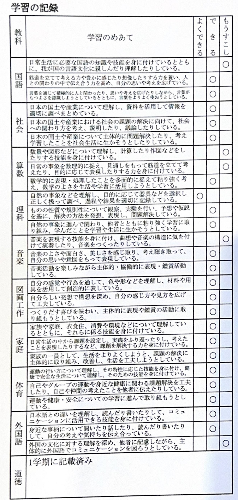
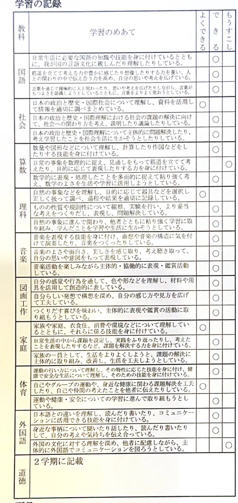
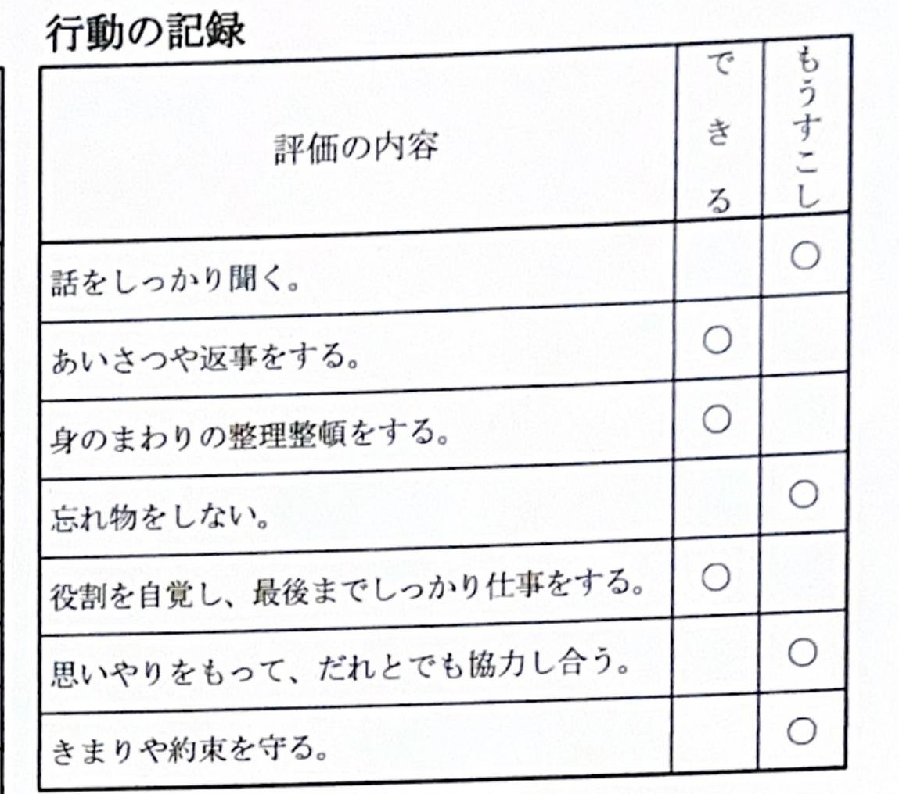
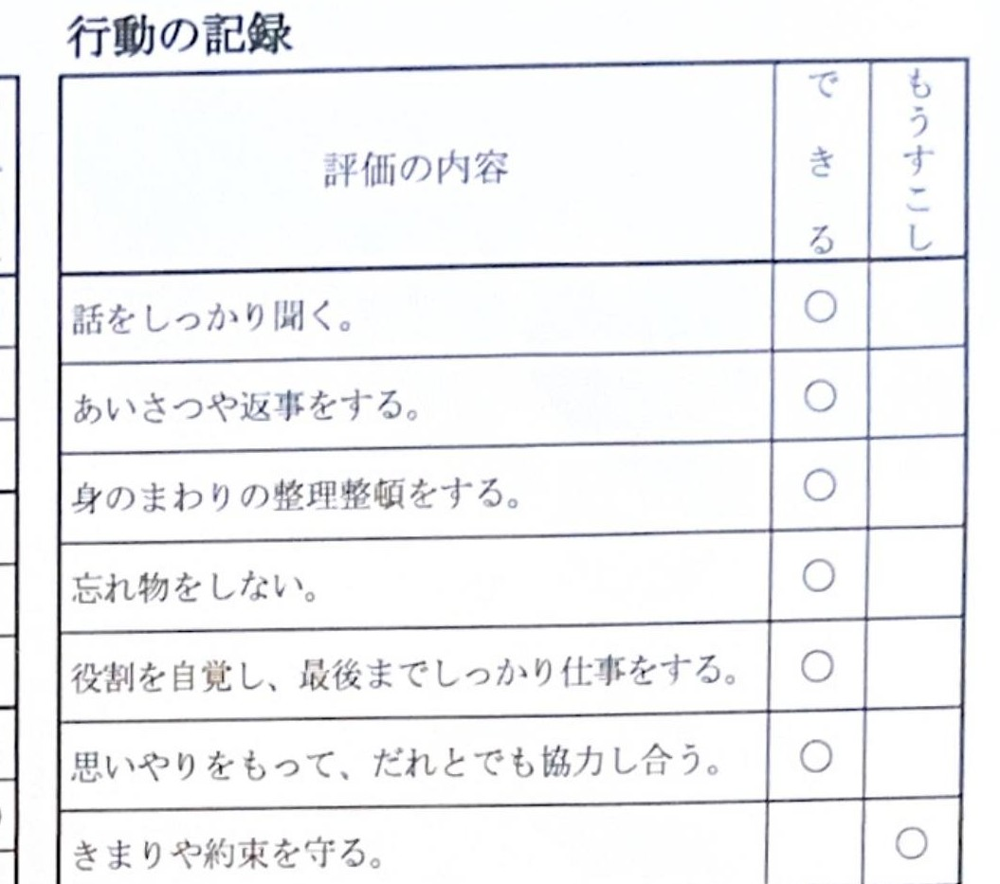

ひと目でわかる、今の孝太郎
6年1学期の通知表（学習の記録）を見てみると、前回（5年3学期）から上がった教科が6教科、下がった教科はゼロ！がんばりがしっかり結果に出ている学期でした。
前回より、自分をコントロールする力が育っています
7項目中3項目が「もうすこし」から「できる」に上がりました。「話をしっかり聞く」「忘れ物をしない」「思いやりをもって協力し合う」は、集中力・自己管理・協調性という違う種類の力が同時に伸びているサインです。残り3項目（あいさつ・整理整頓・役割と仕事）はもともと「できる」を維持していて、土台がぶれていません。唯一「きまりや約束を守る」だけ「もうすこし」に下がりましたが、これは反抗期らしい自然な揺れの範囲。全体としては、6年生になってむしろ落ち着いてきている、という前向きな変化です。
教科別評価の推移（各学年1学期時点）
通知表の「学習の記録」は、1・2年生は2段階（できる／もうすこし）、3年生以降は3段階（よくできる＝3点／できる＝2点／もうすこし＝1点）で評価されています。表の数字は「知識・技能／思考・判断・表現／主体的に学習に取り組む態度」の3観点を点数化して足した「何点中、何点」です。1・2年生は2段階評価のため3観点の満点は6点、3年生以降は3段階評価のため満点は9点になります。
前回（5年3学期）→ 今回（6年1学期）
通知表の原本そのものを並べています。クリックすると、その学期のページを大きく見られます。


※ 見やすさのため「学習の記録」欄のみをトリミングして並べています。原本全体（行動の記録・所見なども含む）は画像をクリックすると見られます。
5年3学期 → 6年1学期
直前の学期（5年3学期）と比べて、上がった・下がった・変わらなかったを教科ごとに見ています。
| 教科 | 観点 | 5年3学期 | 6年1学期 | 何が変わったか |
|---|---|---|---|---|
| 国語 | 知識・技能 | もうすこし1点 | できる2点 | 上昇教科合計 5点→6点（9点満点）「知識・技能」がもうすこし→できるに |
| 思考・判断・表現 | できる2点 | できる2点 | ||
| 態度 | できる2点 | できる2点 | ||
| 教科合計（9点満点） | 5 | 6 | ||
| 算数 | 知識・技能 | もうすこし1点 | できる2点 | 上昇教科合計 4点→5点（9点満点）「知識・技能」がもうすこし→できるに改善。ただし「思考・判断・表現」は5年3学期・6年1学期ともにもうすこしで、応用面の課題は継続 |
| 思考・判断・表現 | もうすこし1点 | もうすこし1点 | ||
| 態度 | できる2点 | できる2点 | ||
| 教科合計（9点満点） | 4 | 5 | ||
| 社会 | 知識・技能 | できる2点 | よくできる3点 | 上昇教科合計 6点→7点（9点満点）「知識・技能」がよくできるに |
| 思考・判断・表現 | できる2点 | できる2点 | ||
| 態度 | できる2点 | できる2点 | ||
| 教科合計（9点満点） | 6 | 7 | ||
| 理科 | 知識・技能 | よくできる3点 | よくできる3点 | 変化なし教科合計 7点→7点（9点満点）3観点とも変わらず高水準を維持 |
| 思考・判断・表現 | できる2点 | できる2点 | ||
| 態度 | できる2点 | できる2点 | ||
| 教科合計（9点満点） | 7 | 7 | ||
| 家庭科 | 知識・技能 | できる2点 | よくできる3点 | 上昇教科合計 6点→7点（9点満点）「知識・技能」がよくできるに |
| 思考・判断・表現 | できる2点 | できる2点 | ||
| 態度 | できる2点 | できる2点 | ||
| 教科合計（9点満点） | 6 | 7 | ||
| 音楽 | 知識・技能 | もうすこし1点 | できる2点 | 上昇教科合計 5点→6点（9点満点）「知識・技能」がもうすこし→できるに |
| 思考・判断・表現 | できる2点 | できる2点 | ||
| 態度 | できる2点 | できる2点 | ||
| 教科合計（9点満点） | 5 | 6 | ||
| 図画工作 | 知識・技能 | できる2点 | できる2点 | 変化なし教科合計 6点→6点（9点満点）3観点とも変わらず安定 |
| 思考・判断・表現 | できる2点 | できる2点 | ||
| 態度 | できる2点 | できる2点 | ||
| 教科合計（9点満点） | 6 | 6 | ||
| 体育 | 知識・技能 | できる2点 | できる2点 | 上昇教科合計 6点→7点（9点満点）「自己や仲間の考えを伝える力」がよくできるに |
| 思考・判断・表現 | できる2点 | よくできる3点 | ||
| 態度 | できる2点 | できる2点 | ||
| 教科合計（9点満点） | 6 | 7 | ||
| 全教科合計（72点満点） | 45 | 51 | 上昇全教科合計 45点→51点（72点満点）8教科合計で+6点 | |
※ 評価は「知識・技能」「思考・判断・表現」「主体的に学習に取り組む態度」の3観点を、よくできる＝3点／できる＝2点／もうすこし＝1点で点数化し、教科ごとに合計（9点満点）したものです（外国語は教科別評価から除外しているため含めていません）。3観点の内訳は通知表原本の「学習のめあて」欄をそのまま転記しています。算数は「知識・技能」がもうすこし→できるに伸びた一方、「思考・判断・表現」は5年3学期時点からすでにもうすこしで、6年1学期も変わらずもうすこしのままです。応用面の課題は下降したのではなく、この2学期にわたって解消されずに続いている、と読むのが正確です。それ以外の教科は、直前の学期からの下降は見られませんでした。よくできる（3点）が新しくついた観点：社会と家庭科の「知識・技能」、体育の「思考・判断・表現」。
教科別のテスト結果
青が「知識・技能（基礎）」、ピンクが「思考・判断・表現（応用）」の得点率です。単元ごとにばらつきがあり、そこにこれからのヒントがあります。
社会
テストを見る国語
テストを見る前回との比較（5年3学期 → 6年1学期）
「行動の記録」は全学年共通で2段階（できる／もうすこし）評価です。7項目すべてを、直前の学期（5年3学期）と比べました。


※ 見やすさのため「行動の記録」欄のみをトリミングして並べています。原本全体は画像をクリックすると見られます。
| 項目 | 5年3学期 | 6年1学期 | 何が変わったか |
|---|---|---|---|
| 話をしっかり聞く | もうすこし | できる | 上昇5年3学期は「もうすこし」でしたが、6年1学期で「できる」に。人の話に集中する時間が伸びています。 |
| あいさつや返事をする | できる | できる | 変化なし5年3学期・6年1学期ともに「できる」を維持しています。 |
| 身のまわりの整理整頓をする | できる | できる | 変化なし5年3学期時点ですでに「できる」で、6年1学期も安定しています。 |
| 忘れ物をしない | もうすこし | できる | 上昇5年3学期は「もうすこし」でしたが、6年1学期で「できる」に改善しました。 |
| 役割を自覚し、最後までしっかり仕事をする | できる | できる | 変化なし5年3学期・6年1学期ともに「できる」を維持しています。 |
| 思いやりをもって、だれとでも協力し合う | もうすこし | できる | 上昇5年3学期は「もうすこし」でしたが、6年1学期で「できる」に伸びました。 |
| きまりや約束を守る | できる | もうすこし | 下降6年1学期で新しく「もうすこし」に。反抗期らしい変化とも言えるので、責めるより様子を見たいポイントです。 |
※ 「行動の記録」は「できる／もうすこし」の2段階評価のため、教科別評価のような点数の内訳はありません。「きまりや約束を守る」だけが5年3学期の「できる」から6年1学期に「もうすこし」に変わりましたが、これは反抗期らしい自然な変化とも言えるので、まずは様子を見たいポイントです。
点数の中身を見て分かったこと
いちばん大きなパターン：「応用（思考・判断・表現）」で毎回落としている
算数の対称な図形（70→30）、文字と式（85→20）のように、基礎知識のパートは取れているのに、後半の応用・記述パートで点数が大きく下がる、という同じ形の失点が繰り返し出ています。理解していないというより、「複数の条件を組み合わせて考える」「言葉で説明する」問題への慣れの差である可能性が高いです。ここが対策の一番のねらい目です。
国語と家庭科は今回の柱
国語の「帰り道」は表95点・裏100点、家庭科も85〜90点台と安定しています。読み取りと表現の力、生活に関する理解力はしっかり育っています。ここは自信にしてよいところです。
理科・社会は「単元との相性」で差が出ている
理科の物の燃え方（表100点）や社会の憲法（表100点）のように満点近い単元がある一方、社会の国土づくりでは36点の回もあります。得意不得意というより、単元ごとの取り組み方にムラがある状態です。
1年生から6年生までの成績推移
各学年の1学期時点の評価を並べたものです。1・2年生は2段階評価（6点満点）、3年生以降は3段階評価（9点満点）のため、同じ「6/6」と「6/9」でも満点自体が違う点にご留意ください。
| 教科 | 1年 | 2年 | 3年 | 4年 | 5年 | 6年 | 推移（3〜6年） | 傾向 |
|---|---|---|---|---|---|---|---|---|
| 国語 | 6/6 | 5/6 | 5/9 | 5/9 | 6/9 | 6/9 |
3年4年5年6年
|
安定6〜7割台で推移 |
| 算数 | 6/6 | 6/6 | 6/9 | 5/9 | 5/9 | 6/9 |
3年4年5年6年
|
要フォロー「思考・判断・表現」が4年から3年連続もうすこし |
| 社会 | ー | ー | 6/9 | 8/9 | 8/9 | 7/9 |
3年4年5年6年
|
高水準4年生から高水準を維持（6年1学期は7/9） |
| 理科 | ー | ー | 6/9 | 6/9 | 6/9 | 7/9 |
3年4年5年6年
|
伸び6年でよくできるが増え、伸びが見える |
| 家庭科 | ー | ー | ー | ー | 6/9 | 7/9 |
3年4年5年6年
|
好調5年生から開始、初回から安定して6年はさらに上昇 |
| 音楽 | 6/6 | 6/6 | 5/9 | 6/9 | 6/9 | 6/9 |
3年4年5年6年
|
安定3年からゆるやかに上がり、4年以降は6〜7割台をキープ |
| 図画工作 | 6/6 | 6/6 | 6/9 | 6/9 | 8/9 | 6/9 |
3年4年5年6年
|
安定5年に一度伸び、6年は6〜7割台に戻って推移 |
| 体育 | 6/6 | 6/6 | 6/9 | 6/9 | 6/9 | 7/9 |
3年4年5年6年
|
安定3〜5年は6/9で安定、6年はやや上向き（7/9） |
※「ー」はその学年でまだ評価対象の教科でない、または今回未確認の箇所です。1〜2年生は6点満点、3年生以降は9点満点なので、同じ「6/6」と「6/9」でも満点自体が違う点にご留意ください。算数のみ4年生以降「思考・判断・表現」が3年連続でもうすこし評価となっており、6年1学期のテスト結果（応用問題での失点）と同じ傾向が通知表にも一貫して表れています。「推移」列は3年生以降（同じ3段階評価の期間）を折れ線で示したもので、間の学年のデータが未確認の場合も直線でつないでいます。
1年生から5年生までの記録
毎年の通知表の「所見」に書かれていたことから、そのまま抜き出しています。5年間、先生からの言葉はずっと前向きです。
「知的好奇心が旺盛で、新しいことを知りたいという気持ちが強く、学習への意欲につながっています。タブレットを活用した学習にも関心をもち、毎回夢中になって取り組んでいます。自分の仕事は、責任をもってやり遂げます。」
3学期：「数直線と数を対応させて考えることができています。プログラミングの仕組みを理解し、楽しく取り組みました。」
「漢字を正しく丁寧に書こうと、努力を重ねています。努力の成果が表れ、着実に力を伸ばしています。算数では、かけ算の仕組みを正しく理解し、立式することができました。」
3学期：「最後まで諦めずに鍵盤ハーモニカの練習に取り組み、リズムよく演奏できるようになりました。」
「係や当番の仕事に最後まで取り組みました。豊富なタブレットに対する知識を使い、友達が操作で困っているときには助けました。」
外国語活動「Hello, World!」で世界の挨拶の違いに興味をもち、快活に挨拶をして好きなものを伝え合うことができた、という記録があります。行動面・学習面ともに、気になる記述はありません。
総合的な学習「お米博士になろう」では、「ロボットやITを使ったスマート農業について調べ、便利な機械が開発されているが値が張ることが分かり、手放しで導入できるものでもないと、現実的に考えを巡らせていました。」
2学期：「友達の意見を聞き、自分だったらと思いを巡らせました。相手に配慮しつつ事実や意見を伝えるにはどうすべきかを考えました。」
中学・高校までのロードマップ
都立高校入試は「学力検査7：調査書3」で、調査書（内申点）に使われるのは中学3年生の評定だけです。つまり中1・中2は基礎固めと学習習慣づくりに使える期間です。
応用問題への慣れをつくる
算数を中心に、「表（基礎）」だけでなく「裏（応用・記述）」の問題に慣れる時間を増やす。理科・社会は塾でカバーされていないので、テストの復習を家庭で見る。
中学の評価のされ方に慣れる
中1の内申は高校入試に直接使われないが、勉強の型（提出物・定期テスト対策・ノートの取り方）を早いうちに身につけておくと中3で楽になる。石神井西中は明光義塾で少し先取りしているので、学校の授業を「復習」として使える強みがある。
理科・社会・英語の主体性をつける
内申にまだ直接影響しない今のうちに、家庭学習だけでカバーしていた教科（理科・社会・英語・家庭科）を自走できる状態にしておく。
内申と入試本番
中3の評定がそのまま調査書点になる年。9教科の実技系科目（2倍換算）も含めて取りこぼさないようにする。
練馬・杉並・武蔵野・三鷹エリアの高校 偏差値ラダー
関町南（練馬区西端）から通える範囲として、練馬だけでなく隣接する杉並区・武蔵野市・三鷹市の都立高校も加えました。左が都立（公立）、右は私立高校です。私立は同じくらいの偏差値帯の学校に加えて、早稲田大学高等学院・早稲田実業・立教新座など、今のレベルより上の人気大学附属校も通える範囲で追加しています。私立は入試の仕組み（内申の使い方、単願・併願、付属校か進学校かなど）が都立と大きく異なるので、あくまで「レベル感の目安」として見てください。各校の名前の下には、主にどのあたりの大学に進学しているかも参考として添えています（年度により変動します）。
今のままの成績が続いたら、どのあたり？（あくまで参考）
下のラダーに緑の点線バーで示したのが「今の成績ライン」の目安です。6年1学期時点で、国語・理科・社会は安定して高水準、算数も基礎（知識・技能）は良好ですが、算数の「思考・判断・表現」（応用）に3年連続の課題が残っています。この状態がそのまま続くと、都立石神井高校〜井草高校あたり（偏差値55〜60）が目安になります。ただし、これは小学校の通知表評価をそのまま当てはめた大まかな試算にすぎません。実際に入試で使われる内申は中学3年生の評定だけで、中1・中2はまだ基礎固めの期間です。算数の応用問題への慣れが今のうちに進めば、豊多摩・武蔵野北（偏差値64〜65）も十分に射程に入ってきます。
※ 偏差値はみんなの高校情報・ManaWillなどの模試・塾系サイトの2026年度公表値を参照。情報源によって数値の幅があり（西高校は72〜73、豊多摩高校は62〜64という表記も見られます）、目安としてご覧ください。青いバー＝現実的な候補として通える都立高校、ベージュのバー＝参考として載せている、今のレベルからは離れている高校、緑の点線バー＝今の成績が続いた場合の参考ラインです。左端の色帯は、大手進学塾が使う偏差値帯ランク分けの一般的な考え方を参考に、このラダーの範囲（偏差値37〜73）に合わせて独自にS〜Dの5段階へ区分したものです。塾によって基準が異なるため、あくまで相対的な目安としてご覧ください。大学名は各校の合格実績サイト等から拾った代表例で、年度により変動します。🚲の自転車時間はご自宅（関町南）からGoogleマップの自転車ルート検索による目安です。信号や坂道、天候によって実際はもっとかかることもあります。想定圏外・工業科の2校は時間を省略しています。「3年間の費用目安」は入学金・授業料・施設費・諸費等の3年間合計（総額）から、2026年度〜の高校授業料無償化（国＋都、所得制限なし。公立は年11.88万円、私立は年最大45.72万円まで授業料を実質無償化）を差し引いた「実質」負担額です。都立は全校共通の代表額として算出。制服・教材・修学旅行積立金などは学校により異なり、上記に含まれない場合があります。
※ 私立の偏差値・特徴もManaWillなど模試・塾系サイトおよび各校公式情報を参照した目安です。私立は単願・併願で基準が変わったり、コース（特進／進学／総合など）によって偏差値の幅が大きく出たりするため、実際の受験可能性は個別に要確認です。💰の「実質」は入学金・授業料・施設費・諸費等の3年間総額から、2026年度〜の高校授業料無償化（国＋都、所得制限なし・私立は年最大45.72万円まで）を差し引いた目安額です。「概算」の表示があるものは、学校公式サイトに詳細な学納金一覧が見当たらず、受験情報サイト等の断片的な情報から算出した推定値のため、実際の金額は必ず各校公式サイトでご確認ください。コース制の学校は選択コースにより金額が変動します。
内申点（調査書点）のしくみ
入試の総合点は1020点満点。内訳は「学力検査700点」＋「調査書（内申）300点」＋「ESAT-J（英語スピーキングテスト）20点」。学力検査と調査書の比率は7：3です。
換算内申（65点満点）の出し方：主要5教科（国語・数学・英語・理科・社会）の評定合計に、実技4教科（音楽・美術・保健体育・技術家庭）の評定合計×2を足したもの。実技系の評定が2倍で効いてくるので、5教科だけでなく実技もおろそかにできません。
この換算内申を「×300÷65（端数切り捨て）」で300点満点の調査書点に変換し、学力検査の得点と合算します。
内申として使われるのは中学3年生の評定だけ。中1・中2の内申は入試の点数には直接入りません。だからこそ中1・中2は「点数を気にする期間」というより「中3で困らないための基礎固めの期間」と考えられます。
明光義塾（個別指導）と家庭
3月の春季講習から通塾。国語・算数を週1回、夏休みは英語も追加。学校より少し先取りしているのは良いポジション。
塾でカバーされている
- 国語（週1回）
- 算数（週1回）
- 英語（夏休みのみ追加）
家庭でのフォローが必要
- 理科
- 社会
- 家庭科
- 英語（夏休み以降の定着）